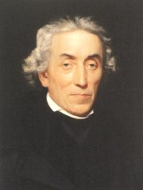

Gelasius Dobner na rytině Jana Balzera vytvořené podle obrazu J.Q.Jahna
|
OBROZENECKÁ VĚDA
První fáze národního obrození byla ve znamení vědy, především dějezpytu, jazykovědy a literární historie. Osvícenští vědci jako Dobner nebo Dobrovský se snažili hlavně o popis skutečnosti, druhá generace vědců (Jungmann, Palacký...) už vědu využívala pro národní zájmy a přizpůsobovala realitu svému obrazu. Vynikajících výsledků dosáhli odborníci na přírodní vědy – matematik Bernard Bolzano (1781-1848), který prý pomocí teorie množin dokázal existenci Boží, a biolog Jan Evangelista Purkyně (1787-1869). Rozvíjí se také folkloristika, hlavně sběratelství lidové slovesnosti.
První vědecké instituce měly soukromý charakter. V roce 1774 vznikla Soukromá společnosti nauk (později Česká společnost nauk (1784), ještě později Královská česká společnost nauk (1790)). České muzeum (později Muzeum Království českého, dnes Národní muzeum) bylo založeno roku 1818. V roce 1831 vznikl při muzeu spolek Matice česká, který podporoval české písemnictví. Začaly vycházet první odborné časopisy – Prager gelehrte Nachrichten (1771), Krok (1821-1840), Časopis Českého muzea (od roku 1827, pod různými názvy do současnosti) a Živa.
|

Ohlášení vzniku Matice české
|
Gelasius Dobner (1719-1790)
Dobner se narodil v Praze a také zde zemřel. Tento člen piaristického řádu je považován za prvního českého osvícence a zakladatele moderního dějepisectví. Vydal Hájkovu kroniku a řadu latinských pramenů k českým dějinám. Psal latinsky.
|
Gelasius Dobner: Hájkova Kronika česká
Dobner byl pověřen vydáním latinského překladu Hájkovy Kroniky české. Úkolu se zhostil velmi zodpovědně a v kritickém komentáři srovnal Hájkovy informace s dochovanými listinami a dalšími prameny. Přestože jeho vydání Hájkovy kroniky sahalo pouze do roku 1198, zabralo celých 6 svazků (zbytek zůstal v rukopise). V 70. letech 18. století ovšem nebylo mnoho lidí, kteří by přijali myšlenku, že příchod praotce Čecha patří do světa bájí, nikoliv do dějepisu...
|
Kdy vyšla Hájkova kronika?
Můžeme jejímu autorovi vytýkat, že si nepočínal jako objektivní historik? Proč?
Ověřuješ si získané informace, nebo všemu slepě věříš jako čtenáři Hájkovy kroniky?
|
František Martin Pelcl
(1734-1801)
Pelcl se narodil v Rychnově nad Kněžnou a zemřel v Praze. Studium práv nedokončil, protože začal pracovat jako vychovatel a knihovník u hraběte Nostice, aby uživil rodinu. V 80. letech byl cenzorem českých knih a v roce 1793 se stal prvním profesorem české řeči a literatury na pražské univerzitě.
|
František Martin Pelcl
Z Pelclova díla je nejvýznamnější Nová kronika česká (mohly vyjít pouze 3 díly do roku 1378). Česky napsal ještě soubor životopisů Vyobrazení učenců a umělců v Čechách a na Moravě. Učebnice Základy gramatiky české a Rozmluva o české literatuře jsou v němčině. Pelcl vydal Balbínovu Obranu a Příhody Václava Vratislava z Mitrovic. Paměti, ve kterých se dívá kriticky na éru Josefa II., vyšly až po autorově smrti.
Josef II. se stal hrdinou četných pověstí. Znáš některou z nich?
|
Pelcl vydal Balbínovu Obranu v latině sto let po jejím napsání, český překlad vyšel o dalších sto let později.
|
Josef Dobrovský (1753-1829)
Dobrovský se narodil v Ďarmotech u Rábu a zemřel v Brně. Vystudoval teologii, ale kněžské dráze se nevěnoval (zůstala mu jen přezdívka modrý abbé). Marně usiloval o důležitá místa v oborech, kterými se zabýval. Naštěstí ho finančně podporoval hrabě Nostic. K pokusům mladších kolegů o vzkříšení češtiny jako plnohodnotného jazyka vědy i umění se Dobrovský stavěl skepticky. Zůstával věrný myšlenkám osvícenství a češtinu především vědecky zkoumal. Dobrovský je považován za otce slavistiky.
Čím se zabývá slavistika?
Znáš i jiné slavisty?
Podívej se na internetové stránky Ústavu slavistických a východoevropských studií FF UK.
|
Josef Dobrovský
Latinským spisem Základy jazyka staroslověnského položil Dobrovský základy nové vědě – slavistice. Jinak psal hlavně německy: Dějiny české řeči a literatury (oceňuje veleslavínskou češtinu, vývoj jazyka po Bílé hoře považuje za úpadek), Česká prozódie (prosazuje sylabotónický systém), Podrobná mluvnice jazyka českého, Německo-český slovník (2 díly). Zajímal se také o lidovou slovesnost – Českých přísloví sbírka.
Když Dobrovský zveřejnil svou stať Literární podvod, ve které označil Rukopis zelenohorský za podvrh, jehož cílem je vytvořit velebný obraz českého dávnověku podle soudobých přání, začali ho národní buditelé sdružení kolem Jungmanna považovat za odrodilce.
|

Tkadlík: Josef Dobrovský
Jaké argumenty uvádí Dobrovský, když označuje rukopisy za nepravé?
|
Josef Jungmann (1773-1847)

Jungmannovým rodištěm byly Hudlice u Berouna, zemřel v Praze.
Vystudoval práva, ale věnoval se hlavně pedagogické činnosti (profesor gymnázia v Litoměřicích a pražského Akademického gymnázia, děkan filozofické fakulty, rektor univerzity).
|
Josef Jungmann
Jungmann psal hlavně česky: O jazyku českém,
O klasičnosti v literatuře vůbec a zvláště české,
Slovesnost aneb Sbírka příkladů s krátkým pojednáním o slohu, Historie literatury české (soupis české literární produkce od nejstarších dob po současnost), Slovník česko-německý (5 dílů, 120 000 hesel). Překládal z angličtiny (Miltonův Ztracený ráj), němčiny (Goethův Heřman a Dorota), francouzštiny (Chateaubriandova Atala), slovanských jazyků (Slovo o pluku Igorově), řečtiny a latiny.
Proč Jungmann napsal toto rozmlouvání?
|
Jungmann je nejdůležitější postavou českého národního obrození. Podle Jungmanna je podstata národa dána jazykem. Proto se snažil vzkřísit češtinu v její bývalé slávě a vytvořit z ní jazyk, ve kterém mohou vznikat kvalitní umělecké i vědecké texty. Tento program si vzala za svůj nastupující generace preromantiků (Čelakovský, Kollár, Palacký, Šafařík...). Jungmann věřil v pravost Rukopisu královédvorského i zelenohorského a považoval je za vrchol české literární tvorby.
|
Pavel Josef Šafařík
(1795-1861)
Šafaříkovým rodištěm bylo Kobeliarovo na Slovensku, zemřel v Praze. Byl ředitelem srbského gymnázia v Novém Sadě. Díky finanční podpoře přátel se mohl věnovat slavistickým studiím a přestěhovat se do Prahy, kde se stal ředitelem univerzitní knihovny.
|
Pavel Josef Šafařík
Šafařík napsal sbírku básní Tatranská Múza s lyrou slovanskou. V pojednání Počátkové českého básnictví, obzvláště prozódie (společně s Palackým, 1818) prosazoval časoměrnou poezii. Vydal slavistické práce Písně světské lidu slovanského v Uhřích, Slovanské starožitnosti, Slovanský národopis a německy psané Dějiny slovanské řeči a literatury podle všech nářečí.
|

Šafařík na daguerrotypu
Co nového ses dozvěděl/a z tohoto pojednání?
Jsou všechny údaje pravdivé? Jak se to dá ověřit?
|
František Palacký (1798-1876)
Palacký pocházel z Hodslavic u Nového Jičína a zemřel v Praze. Nejprve se živil jako vychovatel, ale roku 1829 byl jmenován oficiálním historiografem Království českého s úkolem sepsat pětidílné dějiny Čech. V roce 1848 předsedal Slovanskému sjezdu v Praze, byl poslancem a čelným představitelem staročeského křídla národní strany. Hlásil se k myšlence austroslavismu (zrovnoprávění slovanských národů v rámci habsburské monarchie). Vydával historické prameny (Archiv český, Husovy spisy, dokumenty k husitství a době Jiřího z Poděbrad...).
|
František Palacký
Společně s Šafaříkem napsal pojednání Počátkové českého básnictví, obzvláště prozódie, ve kterém prosazoval časoměrnou poezii. Byl zakladatelem české estetiky (Přehled dějin krásovědy a její literatury, Krásověda čili O kráse a umění). Jeho vrcholným dílem jsou
Dějiny národu českého v Čechách a v Moravě, které vycházely nejdříve německy (1836-67) a od roku 1848 i česky. Sahají do nástupu Habsburků na český trůn v roce 1526. Palacký vidí hlavní princip dějin ve vzájemném stýkání a potýkání českého národa s německým. Češi jsou zde nositeli demokracie, Němci naopak pevného feudálního řádu.
Za vrchol českých dějin považuje husitství, po něm následoval postupný úpadek. Toto vidění historie je značně poplatné dobovému romantismu.
|

Takto zachytil Palackého malíř Tkadlík v roce 1821.
Jací jsou podle Palackého Slované?
Co tvrdí tento historik o Němcích?
Zaujalo tě něco na této ukázce?
|
Sběratelství lidové slovesnosti
Lidové písně byly zařazovány do dobových kancionálů už v dobách renesance. Záměrně začal sbírat lidovou slovesnost Jan Amos Komenský (Přísloví čili Moudrost starých předkův za zrcadlo vystavená potomkům). Vědecky se touto činností zabýval Dobrovský (Českých přísloví sbírka), který sebral i přísloví ruská a srbská. Sbírání lidové slovesnosti podporovaly i rakouské úřady – Jan Rittersberk (České národní písně). Čelakovský uspořádal Mudrosloví národu slovanského ve příslovích a Slovanské národní písně, mezi něž propašoval ohlasovou tvorbu vlastní i dalších obrozenců...
Erben (Prostonárodní české písně a říkadla, Sto prostonárodních pohádek a pověstí slovanských v nářečích původních, České pohádky) a zvláště Němcová (Národní báchorky a pověsti, Slovanské pohádky a pověsti) sebrané texty dodatečně upravovali.
Významné jsou ještě sbírky Františka Sušila (Moravské národní písně) a Františka Bartoše (Nové národní písně moravské s nápěvy do textu vřaděnými, Národní písně moravské vnově nasbírané).
|
Jan Jeník z Bratřic
Narozdíl od ostatních sběratelů lidové slovesnosti Jan Jeník z Bratřic (1756-1845) texty písní neupravoval. Jeho Písně krátké, v větším počtu starodávné lidu obecného českého... obsahují lidové skladby až překvapivě otevřené.
Čeněk Zíbrt
Čeněk Zíbrt byl významný historik (Bibliografie české historie) a etnograf (Staročeské výroční obyčeje, pověry, slavnosti a zábavy prostonárodní). V roce 1891 založil první národopisný časopis Český lid, který mapoval lidovou kulturu. Po Zíbrtově smrti časopis zanikl, ale v roce 1946 bylo jeho vydávání obnoveno.
|
Znáš některou z lidových písní v ukázce v jiném znění, než jak ji zachytil Jan Jeník z Bratřic?
Kolik lidových písní umíš zazpívat?
Čím se zabývá folkloristika, etnografie, národopis, vlastivěda a dialektologie?

Čeněk Zíbrt (1864-1932) vydával i zdánlivě obskurní knihy typu Nápisy ze staročeských štambuchů a památníků až do doby probuzenské, Řády a práva starodávných pijanských cechů a družstev kratochvilných v zemích českých, Skřítek v lidovém podání staročeském, Kouzelný proutek, Virgule, Z kosmetiky staročeské, Staročeské umění kuchařské, Myslivecké pověry a čáry za starých časů v Čechách a desítky dalších.
Co si myslíš o uvedených obyčejích?
|
Internetové stránky
Josef Jungmann: Dvojí rozmlouvání o jazyku českém, O různění českého písemního jazyka,
O klasičnosti literatury
Palacký: Idea státu rakouského
Palacký: Psaní dne 11. dubna 1848 do Frankfurtu
Zíbrt, životopis
Zíbrt, informace
Tieftrunk: Dějiny Matice české
Hmotozpyt či lučba, novočeské chemické názvosloví

Johann Tille: Císař Leopold II. na zasedání Královské české společnosti nauk 25. září 1791
|
Doporučená četba
Aleš, Mikoláš: Špalíček národních písní a říkadel, Odeon, Praha 1985
Bolzano, B.: O nejlepším státě, Praha 1981
Čelakovský, F.L.: Mudrosloví národu slovanského ve příslovích
Český lid, Etnologický časopis
Dobrovský, Josef: Českých přísloví sbírka, Praha 1963
Dobrovský, J.: Výbor z díla, Praha 1953
Erben, Karel Jaromír: Prostonárodní české písně a říkadla (6 svazků), Panton
Jeník z Bratřic, Jan: Písně starodávné lidu obecného českého namnoze nezbedné a pohoršlivé, Maťa, Praha 1999
Jeník z Bratřic, Jan: Rozmarné písničky, SNKLU, Praha 1959
Jetmarová, Milena: František Palacký, Praha 1961
Johanides, J.: František Martin Pelcl, Melantrich, Praha 1981
Jungmann, Josef: Překlady I (Milton: Ztracený ráj)
Machovec, Milan: Josef Dobrovský, Praha 1964
Novotný, Jan: Pavel Josef Šafařík, Melantrich, Praha 1971
Obrození národa, Svědectví a dokumenty, Melantrich, Praha 1979
Palacký, František: Z dějin národu českého, SNKLHU, Praha 1957
Plch, Jaromír: Antologie z české literatury národního obrození, SPN, Praha 1978
Polišenský, Illingová: Jan Jeník z Bratřic, Melantrich, Praha 1989
Zíbrt, Čeněk: Staročeské výroční obyčeje, pověry, slavnosti a zábavy prostonárodní, Praha 1889
Zíbrt, Č.: Veselé chvíle v životě lidu českého, Praha 1950
|
Připrav si referát o některé z uvedených knih nebo internetových stránek.

Dobrovský trpěl chorobou, která poznamenala jeho psychiku, což je patrné i z obrazu Františka Horčičky.
Velkým úkolem pro vědce bylo vytvořit původní českou odbornou terminologii. Víš, co je mluno?
|
|